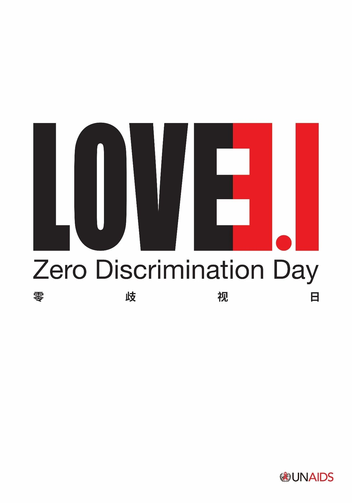
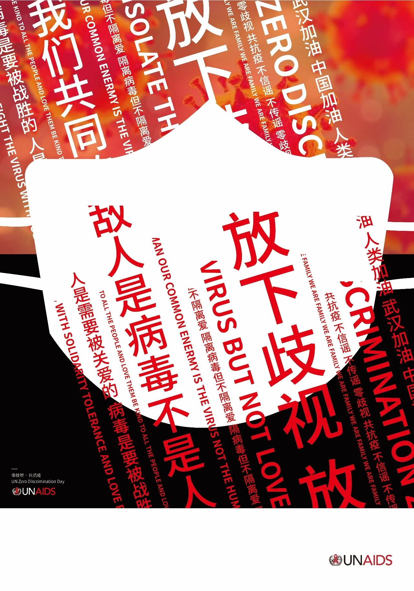
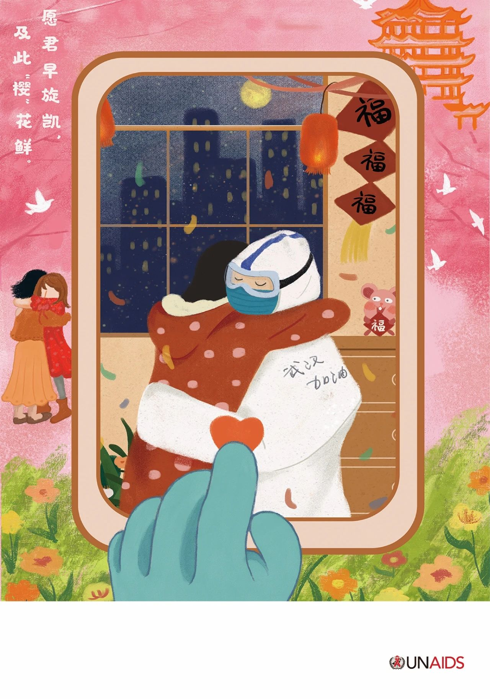
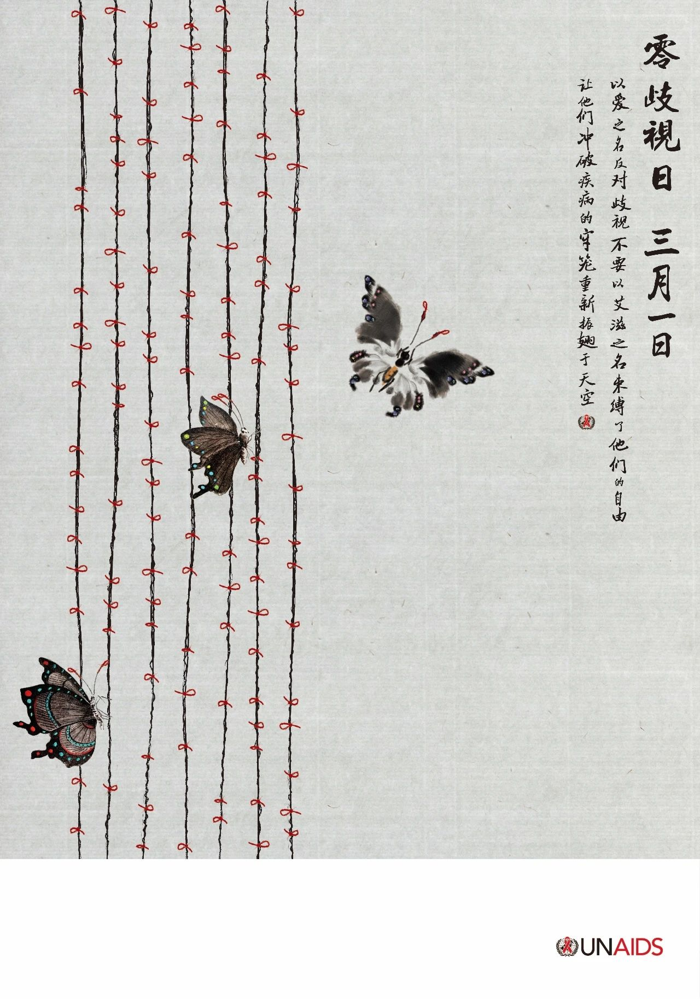
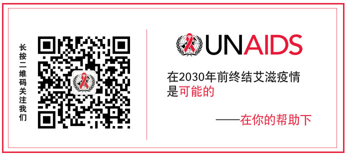

3月1日是零歧视日。自从2014年联合国艾滋病规划署启动零歧视日的纪念活动以来，这一天已经成为倡导去除法律和政策中歧视性条款，实现平等、包容和保障的日子。零歧视日虽由联合国艾滋病规划署发起，但是意义却不仅仅局限于艾滋病或者健康问题，而是包括任何形式的歧视。
由于新冠病毒在中国和全球的蔓延，今年零歧视的主题显得尤为重要和及时。感染者遭受到了不同程度的误解、不尊重和歧视，甚至还有言语和身体上的攻击，这些都是极为不当的。此时，我们需要的是人性的关怀，团结和相互支持，帮助需要帮助的人，治愈那些被感染的人，只有这样，我们才能遏制病毒的传播，实现人类的健康。
在零歧视日到来之际，联合国艾滋病规划署呼吁大家停止歧视，给感染者和受到疫情影响的人多一些尊重、包容、理解和帮助。和联合国艾滋病规划署亲善大使黄晓明一起，多一些包容和关爱
• 当周围充斥着谣言和不实信息，人们特别容易产生恐慌，从而产生歧视和污名；• 而受到歧视的人，往往会躲避起来，不敢就医，延误治疗；联合国驻华协调员罗世礼呼吁团结抗疫，联合国和中国人民在一起
在对抗新冠病毒病毒的关键时期，大家一定要做好防护：戴口罩、勤洗手、公共场所保持距离；同时，保持良好的心态、不必恐慌，对不幸感染病毒的人多一些包容、理解和关爱。
同时，让我们对不顾个人安危治病救人的医务人员表达深深的敬意和感谢。
特别鸣谢新青年设计师联盟的爱心设计师们对零歧视日的关注和对联合国艾滋病规划署的支持，他们用自己的作品传递了包容、团结和爱的正能量。